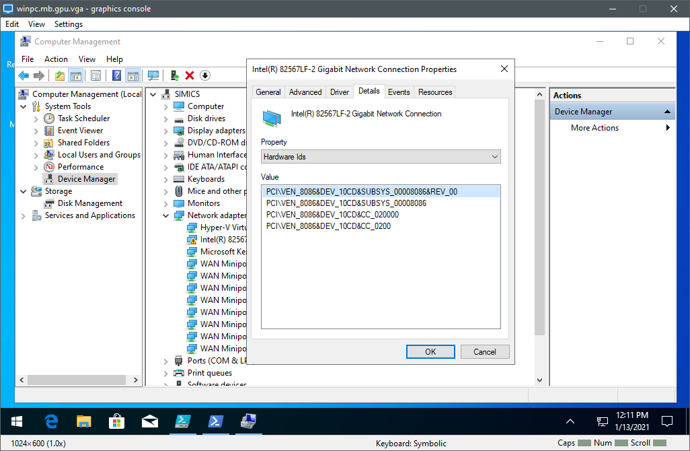
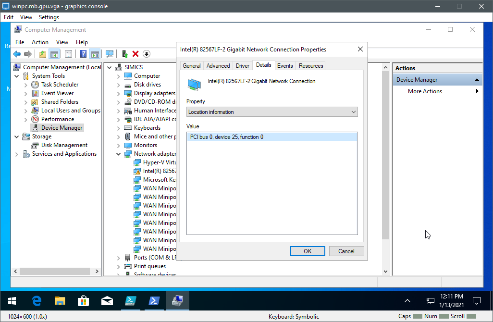

To make debug over the network work, the target system needs to use a network card that WinDbg recognizes. The current list can be found at https://docs.microsoft.com/windows-hardware/drivers/debugger/supported-ethernet-nics-for-network-kernel-debugging-in-windows-10. Basically, all released Intel network cards are supported. The key here is released - models of not-yet released network cards are typically not supported by Windows. Thus, for targets not yet available in hardware you have to add a PCIe-attached network card that WinDbg knows about - like an i350 or i210.
On a Windows target running with a desktop available, you can check the PCIe ID using Windows Device Manager. Find the network device, open properties, and check the details for the hardware IDs. Figure 2 shows an example from Windows 10 on a QSP-x86 target.

You can also check for the PCI device ID of a network by using the Powershell command Get-PnpDevice. Look for the line “DeviceID” after the name of the network device appears (often, there are many virtual devices that also get listed by this command):
> Get-PnpDevice -Class "Net" | fl
Caption : Intel(R) Ethernet Connection (3) I219-LM
Description : Intel(R) Ethernet Connection (3) I219-LM
InstallDate :
Name : Intel(R) Ethernet Connection (3) I219-LM
Status : Unknown
Availability :
ConfigManagerErrorCode : CM_PROB_PHANTOM
ConfigManagerUserConfig : False
CreationClassName : Win32_PnPEntity
DeviceID : PCI\VEN_8086&DEV_15D7&SUBSYS_224517AA&REV_21\3&11583659&0&FE
From Simics side, you can check the PCIe ID using the print-device-regs command. For example, network card on a QSP-x86 target (PCIe ID 0x10CD is supported according to Microsoft):
simics> print-device-regs bank = board.mb.sb.lan.bank.pci_config
Offset Name Size Value
--------------------------------------------
0x0 vendor_id 2 0x8086
0x2 device_id 2 0x10cd
0x4 command 2 0x0
0x6 status 2 0x10
0x8 revision_id 1 0x0
0x9 class_code 3 0x20000
0xc cache_line_size 1 0x0
0xd latency_timer 1 0x0
0xe header_type 1 0x0
0xf bist 1 0x0
0x10 mbara 4 0x0
0x14 mbarb 4 0x0
0x18 mbarc 4 0x1
0x1c base_address_3 4 0x0
0x20 base_address_4 4 0x0
0x24 base_address_5 4 0x0
0x28 cardbus_cis_ptr 4 0x0
0x2c subsystem_vendor_id 2 0x8086
0x2e subsystem_id 2 0x0
0x30 expansion_rom_base 4 0x0
0x34 capabilities_ptr 1 0xc8
0x3c interrupt_line 1 0x0
0x3d interrupt_pin 1 0x1
0x3e min_gnt 1 0x0
0x3f max_lat 1 0x0
0xc8 pm_capability_header 2 0xd001
0xca pm_capabilities 2 0x21
0xcc pm_status_control 2 0x0
0xce pm_sc_bridge 1 0x0
0xcf pm_data 1 0x0
0xd0 msi_capability_header 2 0xe005
0xd2 msi_control 2 0x80
0xd4 msi_address 4 0x0
0xd8 msi_upper_address 4 0x0
0xdc msi_data 2 0x0
0xe0 flrcap 2 0x9
0xe2 flrclv 2 0x6
0xe4 devctrl 2 0x0
simics> print-device-regs board.mb.sb.lan pattern = "device_id"
Bank: pci_config
Offset Name Size Value
-------------------------------
0x2 device_id 2 0x10cd
simics> print-device-regs board.mb.sb.lan pattern = "*id"
Bank: csr
Offset Name Size Value
-------------------------
0x2c08 raid 4 0x0
Bank: pci_config
Offset Name Size Value | Offset Name Size Value
----------------------------------+------------------------------------------
0x0 vendor_id 2 0x8086 | 0x2c subsystem_vendor_id 2 0x8086
0x2 device_id 2 0x10cd | 0x2e subsystem_id 2 0x0
0x8 revision_id 1 0x0 |
If there are multiple network devices in the system, Windows requires that you specify the card to use for debug. This is done using the PCI Bus:Device:Function (BDF) address of the network card supported by the Windows kernel debugger. To find out the BDF of the network card, check the properties in the Windows Device Manager. The address is listed as ‘Location’ in the ‘General’ tab.

You can also use the Get-NetAdapterHardwareInfo Powershell command to get BDF:
> Get-NetAdapterHardwareInfo | fl
Name : Ethernet 2
InterfaceDescription : Intel(R) I210 Gigabit Network Connection
DeviceType : PCI Express endpoint
SegmentNumber : 0
BusNumber : 2
DeviceNumber : 0
FunctionNumber : 0
SlotNumber : 12
NumaNode : 0
PciCurrentSpeedAndMode :
PciExpressCurrentLinkSpeed : 2.5 GT/s
PciExpressCurrentLinkWidth : 4
PciExpressMaxLinkSpeed : 2.5 GT/s
PciExpressMaxLinkWidth : 4
PciExpressVersion : 1.1
LineBasedInterruptSupported : True
MsiInterruptSupported : True
MsiXInterruptSupported : False
It is a good idea to always specify the card to use for debug even if target setup has a single network card. This will ensure against any target configuration changes that could introduce additional network cards.